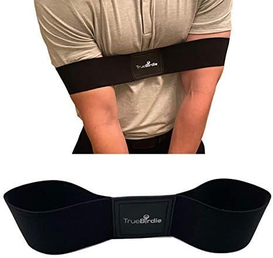

Golf’s expensive. Green fees, overpriced drivers, throw on top the $7 cart beers and it all adds up fast.
But here’s the secret: you don’t need a $600 putter to enjoy yourself. You just need a few cheap gadgets that make the game smoother, funnier, and a little less humiliating.
This isn’t a gear snob list. We’re not talking about clubs designed by NASA engineers.
These are weekend warrior weapons. Gadgets for the beer-drinking golfer. Stuff that earns its spot in the bag.
1. The Swing Trainer Band | Fix Your Flying Elbows
Every group has that guy who slices one into the trees, then immediately gives everyone else swing tips. Don’t be that guy. Be the one who actually fixes their form without dropping $100 on lessons.
A good swing trainer band forces your arms and shoulders to work together instead of flailing around like you’re swatting a bee. It’s stupid simple, and it actually works.
- Trains muscle memory fast
- Light enough to keep in your pocket
- Warms you up without taking a full bucket of balls
👉 Check it out here
2. Magnetic Golf Towel | Stop Losing That Damn Thing
Normal towels are fine. Magnetic towels are better. Stick it on your irons, wedges, or cart and it’ll stay put until you need it.
- Stays wherever you stick it
- Picks up dirt, grass, and shame
- Saves time between shots
👉 Grab one here
3. Beer Cooler Sleeve | The 15th Club

A pro’s bag maxes out at 14 clubs. But you? You’ve got the 15th club, the secret weapon of every self-respecting amateur: the beer cooler sleeve.
- Holds six full-size beers
- Fits perfectly in most bags
- Next time the cart girl rolls up? “No thanks, I’m good.†[cracks sixth beer]
👉 Keep your ammo cold
4. Pocket Rangefinder | Budget Brains
Do you need a $300 laser rangefinder? Probably not. Do you want to stop guessing if the pin is 145 yards or 165 yards? Absolutely.
- Saves you from looking clueless
- Small enough to live in your pocket
- Makes you sound smarter when you say, “148 yards, easy 8 iron”
👉 See the budget-friendly pick
5. Alignment Stick + Angle Holder Set | The Cheat Code You Didn’t Know You Needed
Sexy? Nope. Effective? Stupidly.
- Sets up instant feedback on your swing plane
- Doubles as a warm-up station before the round
- Compact, portable, and way more useful than plain sticks
- Basically gives you pro-level practice vibes for beer-money prices
👉 Grab the alignment + angle set here
Bottom Line
Golf’s supposed to be fun, not a financial burden. A couple of cheap gadgets can make your round smoother, and your scorecard slightly less tragic.
And if you really want to make golf interesting? Join the Don Golf League.
Compete casually. Talk trash. Rep the number on your bag tag. Drink responsibly, or don’t — we’re not your dad.
Join the Don Golf League Today →↠Back to Blog